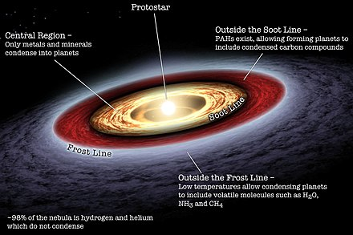
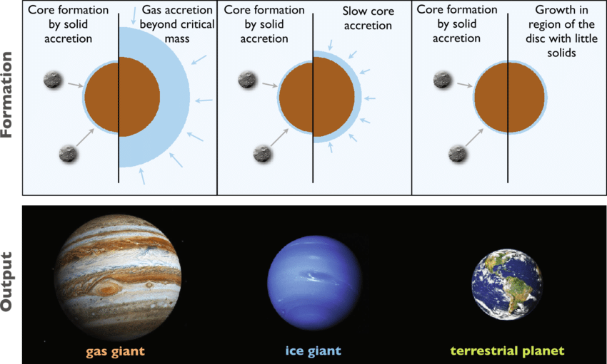
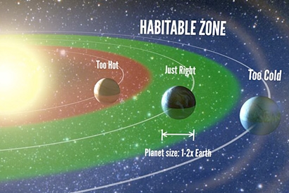

With a mass of 1.45 Mjup (Jupiter masses) and a radius of 0.949 Rjup (Jupiter radii), our exoplanet appears to be a gas giant, similar in mass to Jupiter but slightly smaller in radius. The density of 2,104 kg/m³ indicates that it's denser than Jupiter, suggesting a composition with heavier elements like water, rocks, and metals in addition to hydrogen and helium.
Given its gas giant nature, the surface of our exoplanet may not have a solid surface like terrestrial planets. Instead, it likely has a thick atmosphere, potentially with swirling clouds and various atmospheric layers.
The exoplanet likely formed from the protoplanetary disk surrounding its host star. It might have undergone accretion, where gas and dust gradually accumulated to form the planet. Alternatively, it could have migrated from its initial formation location due to gravitational interactions.
 The habitability depends on various factors, including the distance from the star and its temperature. With a semi-major axis of 0.382 AU and a star temperature of 5520K, the exoplanet might fall within the habitable zone, where liquid water could exist. However, its gas giant nature and high equilibrium temperature might not make it suitable for life as we know it.
One imaginative approach could involve exploring the exoplanet's potential for unique geological features, such as exotic mountains, deep oceans, or unusual atmospheric phenomena. Another avenue could be considering hypothetical forms of life that might thrive in extreme environments, like gas giants, or pondering the possibility of exotic life forms adapted to high pressures and temperatures. Additionally, contemplating the exoplanet's role in its stellar system and its interactions with other celestial bodies can lead to creative scenarios, such as moons harboring life or complex ecosystems within the planet's atmosphere.